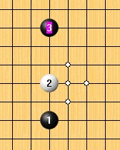
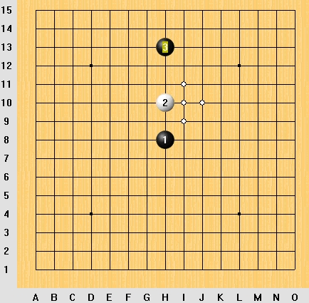
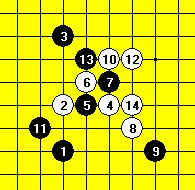

抛砖引玉----2跑远的妖刀
首页
妖刀天下
#1 抛砖引玉----2跑远的妖刀 作者：江南新绿 发表时间：2008-12-9 15:54:48
 abc.rar
abc.rar
看看这个黑3在有禁手的情况下会败不，
其中的5手是图上4手的唯一。
通常都是黑棋先进攻，如果白棋先进攻会是什么样子呢？
［ 失落刀 于 2008-12-9 17:46:31 时奖励此帖[金币加 20 威望加1］现在栏目里面除了有禁妖刀（1.2不跑，3跑远的开局）还有无禁妖刀，现如今又有了2跑远的妖刀。可喜可贺兼晕！
#2 Re:抛砖引玉 作者：失落刀 发表时间：2008-12-9 17:46:14

替江南发图，大家直观点。
#3 Re:抛砖引玉 作者：萧寒寒 发表时间：2008-12-9 17:49:49
这走的啥规则，不懂啊
#4 Re:抛砖引玉 作者：失落刀 发表时间：2008-12-9 17:57:51
嗯嗯，迟早1会跑开天元的哈；
就是不知道什么时候棋盘也会被扯大成19*19
#5 Re:Re:抛砖引玉 作者：nara 发表时间：2008-12-9 18:07:32

版主的图没有坐标,我来发张有坐标的吧,看的更直观点,呵呵!
谢谢参与，只有觉得有趣，大家一起交流。----失落刀
#6 Re:抛砖引玉----2跑远的妖刀 作者：萧寒寒 发表时间：2008-12-9 18:13:47
=======上图对应的爱五子棋谱代码如下，以便你拆解：========
h8h10h13i9j8g10
======================================================通蒲能杀不？
#7 Re:抛砖引玉----2跑远的妖刀 作者：萧寒寒 发表时间：2008-12-9 18:17:44
 搞错了
搞错了
#8 Re:抛砖引玉----2跑远的妖刀 作者：失落刀 发表时间：2008-12-9 19:00:28

这个6胜好像。推论出这个4胜，这个3败。
#9 Re:抛砖引玉----2跑远的妖刀 作者：26 发表时间：2008-12-9 22:14:49
这种开局，以后什么规则下，难说不会出现，呵呵。
#10 Re:抛砖引玉----2跑远的妖刀 作者：失落刀 发表时间：2008-12-9 22:57:39
江南，再抛个砖出来。
#11 Re:Re:抛砖引玉----2跑远的妖刀 作者：江南新绿 发表时间：2008-12-10 16:18:20
=======上图对应的爱五子棋谱代码如下，以便你拆解：========
h8h10h13j10i10i11j11k9h12k12j13
======================================================
#12 Re:抛砖引玉----2跑远的妖刀 作者：许相公 发表时间：2008-12-10 18:28:07
白10应该挡在I―12点
#13 Re:Re:抛砖引玉----2跑远的妖刀 作者：江南新绿 发表时间：2008-12-10 18:56:45
引用：
原文由 许相公 发表于 2008-12-10 18:28:07 :
白10应该挡在I―12点
=======上图对应的爱五子棋谱代码如下，以便你拆解：========
h8h10h13j10i10i11j11k9h12i12g9g8f10e11g11i13e9d8f9d9f11f12h6
======================================================
#14 Re:抛砖引玉----2跑远的妖刀 作者：许相公 发表时间：2008-12-10 19:39:27
白棋走I_15,F_13.D10,四三胜
#15 Re:Re:抛砖引玉----2跑远的妖刀 作者：walker 发表时间：2008-12-16 10:48:33
引用：
原文由 Ryan 发表于 2008-12-9 22:03:17 :
2跑远。。。。。。比赛中估计不可能出现滴，除非出现强迫这种局面的规则（似乎这种情况不会出现）
这种局面用来练习棋力还可以，否则3可以直接在1附近做大优势，白必败
这可能是“新规则”！首先，3手走远，是因为白可能会交换！其次，2跑远，这就是“新规则”开放2的位置！